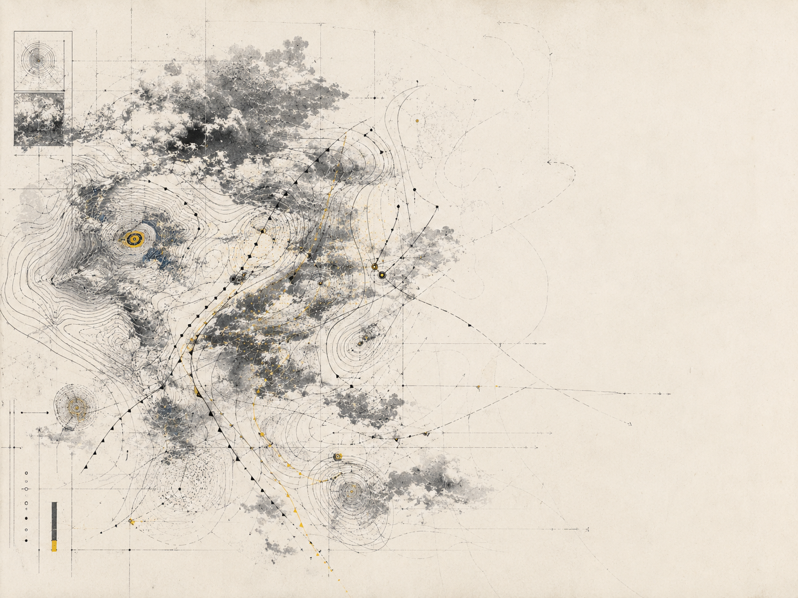
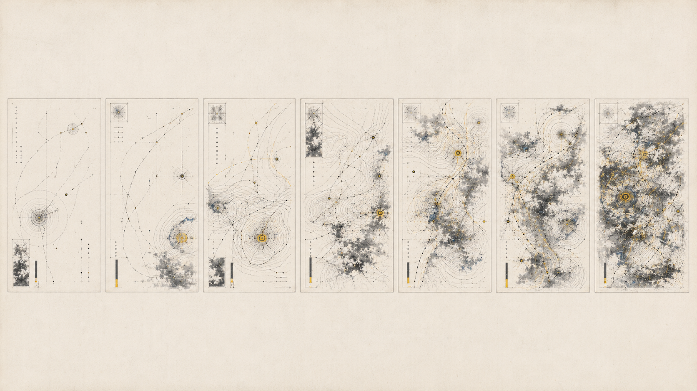
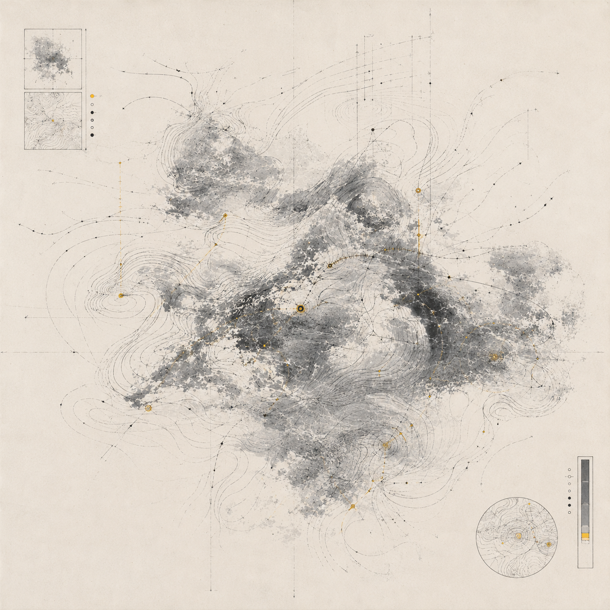
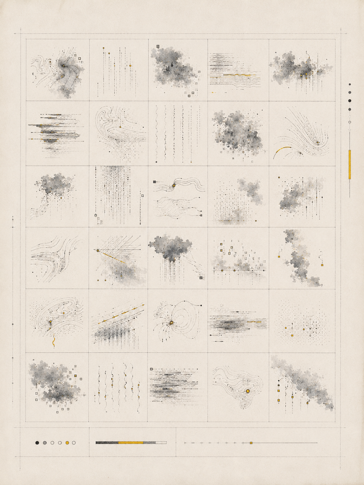
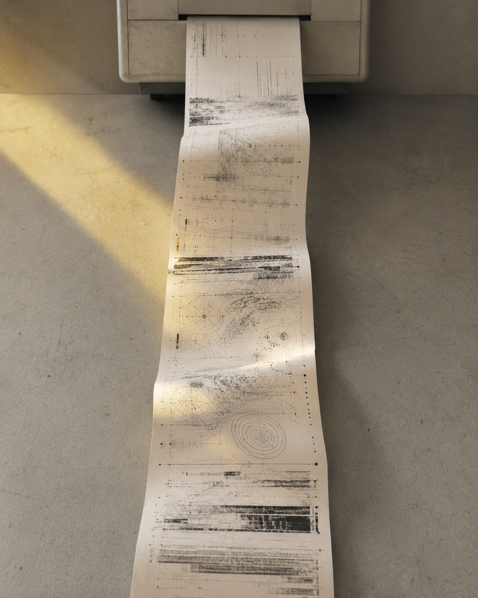

视觉方法 / PROCESS
从天气数据到情绪标记，经过拆解、替换与重组，逐步形成可重复使用的转译规则。
A03 · TYPE
不可读天气
天气给人带来的无法直接读取的主观感受。

本项目以日常天气预报为研究对象，将温度、风向、降水与能见度等信息拆解为符号密度、线条方向和色块变化。通过文字编排、图形转译、扫描与叠印，建立一套无法被直接读取的情绪气象系统，使压迫、迟滞、躁动与空白成为主要视觉结果。项目希望讨论：当信息仍保留结构，却失去清晰含义时，观看者会如何凭借感受重新理解天气。
从天气数据到情绪标记，经过拆解、替换与重组，逐步形成可重复使用的转译规则。
在整理天气预报时发现最先接收的往往是它带来的身体判断。于是刻意削弱了可读性，只保留结构、节奏和变化关系。



